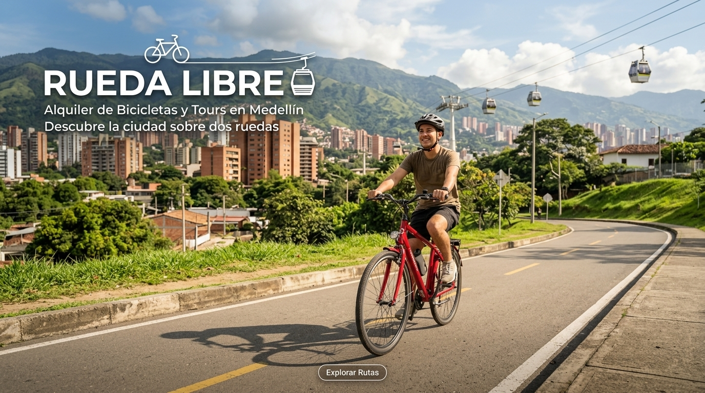
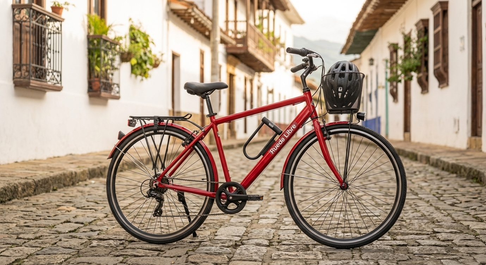
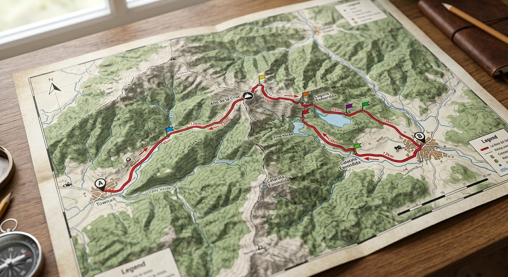

Alquiler de bicicletas
Ofrecemos una amplia variedad de bicicletas para todos los niveles y edades, desde bicicletas de montaña hasta bicicletas urbanas. Nuestro objetivo es proporcionar a nuestros clientes la mejor experiencia de ciclismo posible.
Rueda Libre
Este negocio es para alquilar bicicletas en Medellín
Somos un equipo apasionado por el ciclismo y el turismo, dedicados a ofrecer una experiencia única de alquiler de bicicletas en la hermosa ciudad de Medellín.
Ofrecemos una amplia variedad de bicicletas para todos los niveles y edades, desde bicicletas de montaña hasta bicicletas urbanas. Nuestro objetivo es proporcionar a nuestros clientes la mejor experiencia de ciclismo posible.
Te ofrecemos los recorridos guiados con profesionales que te llevaran a lugares ocultos y explendidos de la ciudad
Te ayudamos y nos aseguramos de que tu viaje no tenga ninguna interrupcion,nos encanta brindarte una buena experiencia y una buena bicicleta en tu viaje



ver nuestra ubicacion en el mapa Escribenos al correo Ir a la seccion Encuentranos